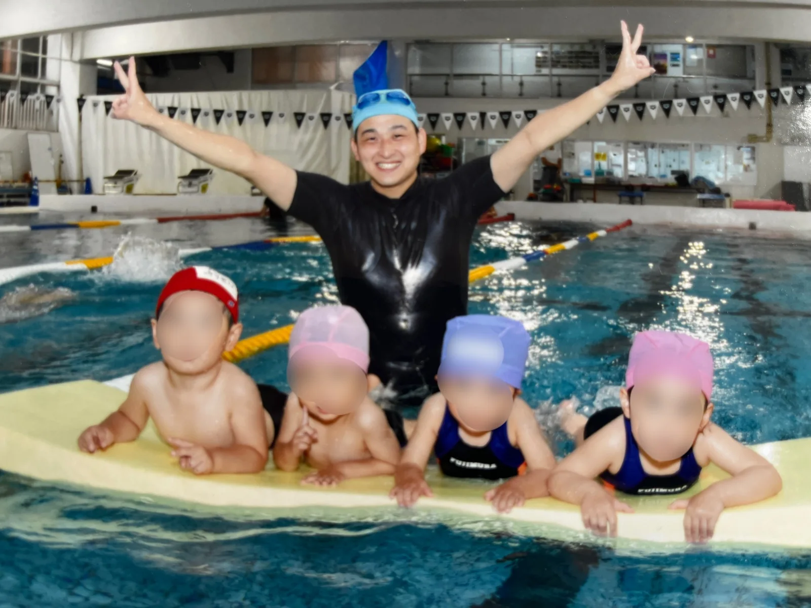
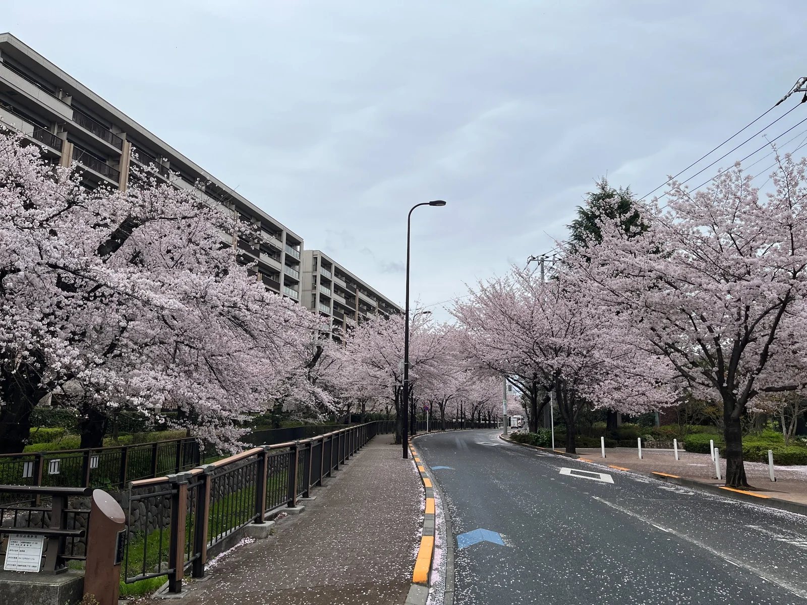
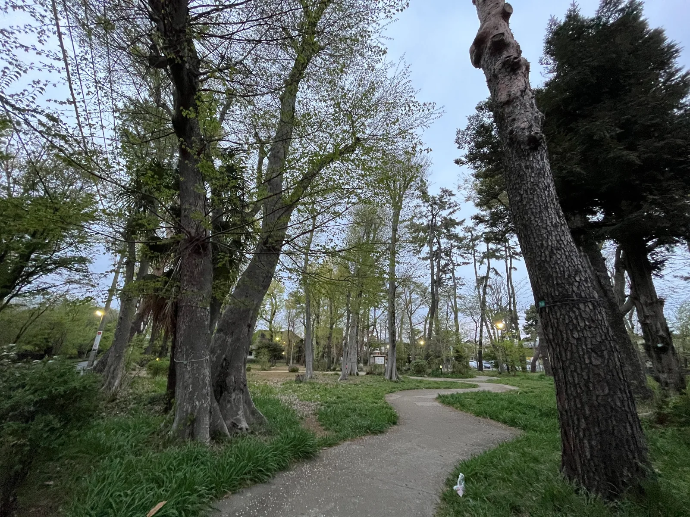
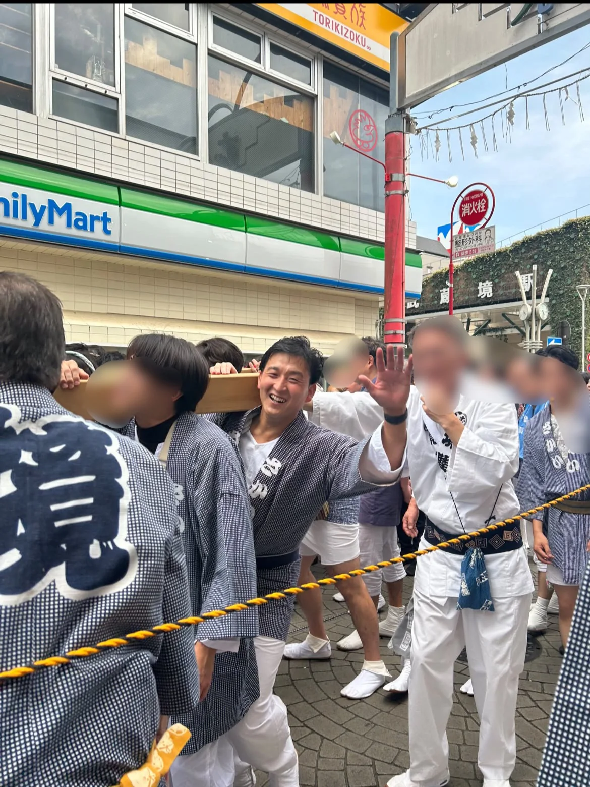
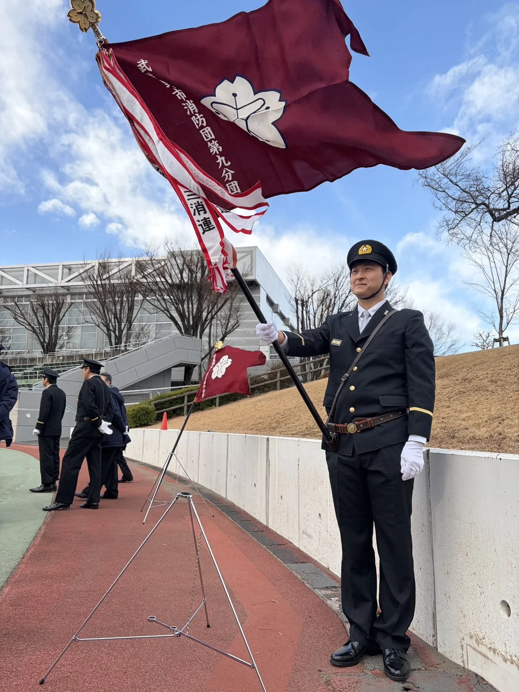
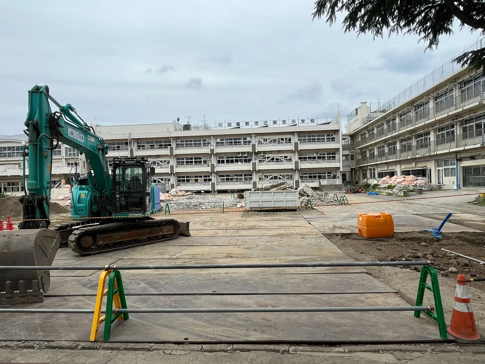
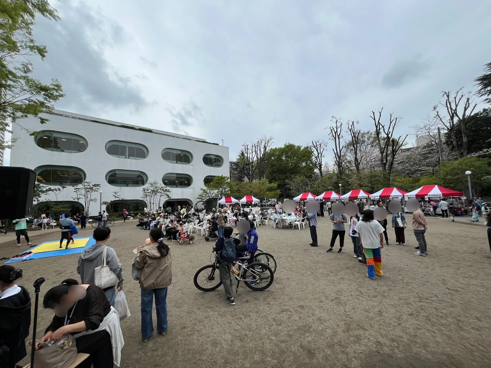
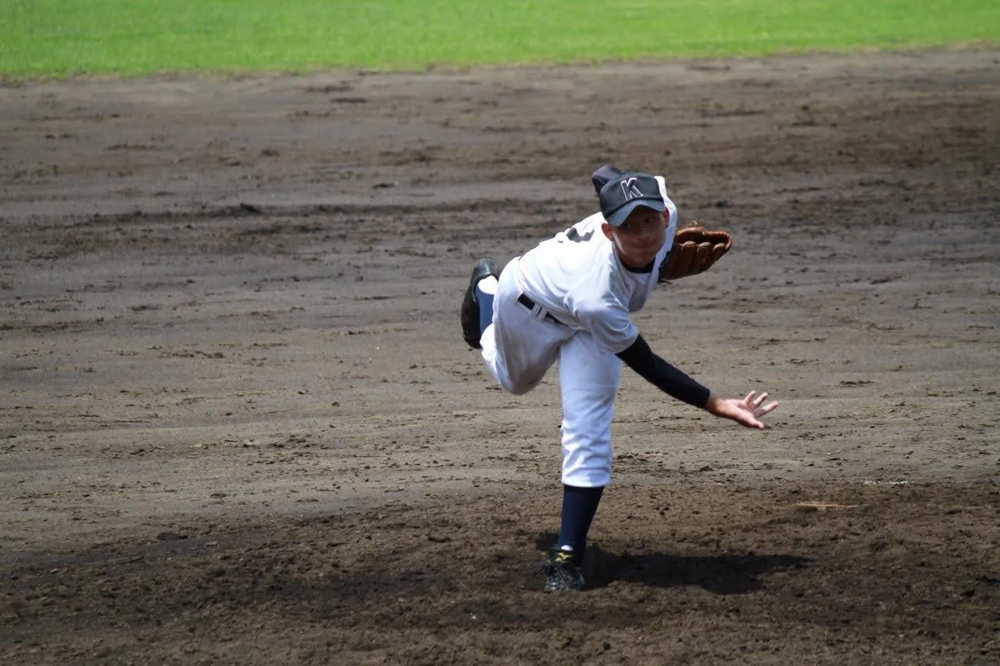

教育・水泳指導
水泳を通じて、命と健康を支える。
赤ちゃんから高齢者まで、さまざまな世代の水泳指導に携わってきました。水の安全と身体を動かす楽しさを伝えます。
来年は武蔵野市制施行80周年この街の未来を切り拓く！
目指す未来を見る道路や公共施設だけでなく、健康、学び、文化、地域の担い手も次の世代へ。少子高齢化が進む中でも、誰もが安心して暮らし、挑戦できる「持続可能な地域社会」を目指します。
現場で感じた疑問や課題から出発し、実現方法や財政面も含めて議論していきます。各項目を開くと、具体的な考え方をご覧いただけます。
建て替えありきではなく、長寿命化も含めて検証。教育・財政・防災・地域利用を一体で考えます。
詳しく読む私が学んだ第五小学校と第一中学校。慣れ親しんだ校舎は取り壊され、一中には立派な新校舎が建ちました。
新しい教育環境が整うことは喜ばしい一方、卒業生として「本当に建て替えるしかなかったのか？」という疑問も残りました。
武蔵野市は、既存の公共施設を長寿命化しながら、原則60年は使用するという方針を示してきました。しかし、60年という数字だけで改築を判断するのではなく、建物の安全性や教育環境、将来の人口動向、改修・建て替えにかかる費用など、様々な観点から丁寧に検討する必要があると考えます。
長寿命化や大規模改修という選択肢も含めて比較・検証し、その根拠を市民に分かりやすく示すことが大切です。
学校は、単に勉強をするための施設ではありません。
子供たちが仲間と出会い、学び、成長する場所であると同時に、防災やスポーツ、地域交流の拠点でもあります。
今後の第二中学校・第六中学校などのあり方についても、子供の学びを第一に、教育環境、財政、防災、地域利用まで見据えて考えていきたいと思います。
勉強、部活動、学校行事、多様な仲間との出会い。子供たちが豊かな青春時代を過ごすことのできる学校を、次の世代へつないでいきます。
体力測定と運動習慣、防災・地域のつながり、援農を結びつけ、健康な地域づくりを考えます。
詳しく読む2年前、仕事と子育てに追われる中、久しぶりにランニングをしようとした私は、自分の体力低下に愕然としました。
それから運動コミュニティに参加し、仲間と一緒に身体を動かす楽しさを再発見しました。今では自ら運動コミュニティを運営し、地域の皆さんと運動習慣づくりに取り組んでいます。
少子高齢化が進む社会において、医療や介護を支え続けていくためにも、一人ひとりが健康で充実した人生を送るためにも、「健康寿命の延伸」は重要な課題です。
健康診断による病気の早期発見に加え、自分の体力を知り、その変化を実感できる「体力測定」の仕組みが必要だと考えています。
災害時には、自分の身を守るだけでなく、避難したり、重い物を運んだり、周囲の人を助けたりする場面もあります。
日頃から体力を維持し、身体を動かす習慣をつけることは、こうした非常時への備えにもつながります。
さらに、地域で一緒に運動することは、顔見知りを増やし、世代を超えた交流を生み出すきっかけにもなります。そうしたつながりは、非常時の助け合いや、日常の孤独・孤立の防止にもつながると考えています。
武蔵野市でも、相続や後継者不足などを背景に農地の減少が続いています。
都市の農地は、新鮮な野菜の供給だけでなく、食育や自然体験、市民活動、災害時の防災空間など、多様な役割を担っています。
この貴重な都市農業を守っていくためには、市・都・国の連携に加え、地域の人々が農業を支える仕組みも必要だと考えています。
そこで私が注目しているのが「援農」です。
農家の方々が必要とする作業と、市民の参加意欲を丁寧につなぎ、農作業を通じて身体を動かしながら、地域の農業を応援する。
市民の健康づくりと農業の担い手支援を結びつける、新たな可能性を探っていきたいと考えています。
また、うんていや複合運動器具などの設置を推進し、公園や公共施設など身近な場所で、誰もが気軽に身体を動かせる環境を増やしていきたいと考えています。
運動を通じた健康づくり、地域のつながり、防災への備え、そして都市農業への支援。
これらを結びつけ、心身ともに元気な市民が支え合う武蔵野を目指します。
ICTとともに、運動・自然・水泳・集団生活など、五感を使って学ぶ機会を大切にします。
詳しく読むICT教育が発展し、子どもたちの学びの可能性は大きく広がっています。
一方で、仲間と身体を動かし、自然に触れ、時には失敗や困難を乗り越える「生身の体験」も、子どもたちの成長には欠かせません。
運動の楽しさ、仲間と協力する喜び、自分の力で何かを成し遂げた達成感。
私はスポーツ指導者として、こうした体験を通じて子どもたちが成長する姿を数多く見てきました。
デジタル技術を活用した教育とともに、身体教育や自然体験、集団生活など、五感を使って学ぶ機会を大切にしたいと考えています。
長年、水泳指導に携わってきた私にとって、水泳教育には特別な想いがあります。
水泳は、単に速く泳ぐことを目指すスポーツではありません。水の怖さを知り、水に慣れ、自分の命を守る力を身につける大切な学びです。
学校施設の老朽化や維持管理費、人材確保などの課題がある中でも、子どもたちの水泳教育を継続できる環境を守らなければなりません。
私は、必ずしも一校に一面のプールを設けることにはこだわりません。
民間施設の活用や拠点校への屋内温水プール整備など、水質管理、安全性、指導体制、財政負担を総合的に検討し、持続可能な水泳教育の仕組みを考えていきます。
武蔵野市には、ジャンボリーやセカンドスクールなど、子どもたちが自然の中で学び、仲間と生活する教育活動があります。
こうした機会を大切にしながら、さらに充実させていきたいと考えています。
親元を離れ、仲間と寝食を共にし、自然の中で挑戦する。普段の教室では得られない経験が、子どもたちの自立心や協調性を育みます。当然、運営する側の負担など課題ももちろんあるために、各方面から丁寧に調整をして参ります。
放課後や休日に、子供たちがスポーツや外遊びに夢中になれる環境が必要です。
部活動指導員の拡充、中学校の校庭への夜間照明の整備、ボール遊びのできる公園の充実など、学校施設と地域の公共空間をより有効に活用していきたいと考えています。
公園には大人も使えるうんていや複合遊具など、全身を使って遊べる設備を増やしていきたい。
もちろん、安全性のリスクヘッジと近隣住民の生活環境や安全性への配慮も欠かせません。
失敗を恐れず挑戦し、仲間と笑い、時には悔し涙を流しながら成長できる。
そんな「生身の体験」にあふれた武蔵野を目指します。
緑と水を守り、大学の知恵と地域の経験をつなぎ、持続可能な地域社会をつくります。
詳しく読む武蔵野市は、先人たちの努力によって、道路、学校、病院、商業施設などが整い、便利で暮らしやすい街へと発展してきました。
しかし、少子高齢化や地域活動の担い手不足に課題を感じる団体もある中、この豊かな市民生活を、これからも維持していけるのでしょうか。
私が目指したいのは、単に新しい施設をつくることよりも、
今ある街の財産を活かし、人と人とのつながりを育み、歴史や文化を次の世代へ引き継いでいくこと。
「持続可能な地域社会」の形成こそ、これからの武蔵野市に求められるまちづくりだと考えています。
武蔵境には、この地域ならではの魅力があります。
小金井公園や境山野緑地、玉川上水、仙川、そして街の中に残る農地。
こうした「緑と水」は、私たちの生活に潤いを与えるだけでなく、自然環境の保全、子どもたちの教育、防災など、多くの役割を担っています。
私は、身近な自然をただ残すだけでなく、市民が親しみ、学び、保全活動にも参加できる環境をつくりたいと考えています。
地域の自然を知ることは、この街をもっと好きになるきっかけにもなるはずです。
武蔵野地域には、特色ある大学が数多くあります。
例えば、日本獣医生命科学大学の専門性を活かしたペット防災や自然環境の保護。大学の研究と市民活動を結びつけることで、新しい地域課題の解決方法が見つかるかもしれません。
子育て、福祉、環境、防災、国際交流など、各大学の得意分野を地域の課題と結びつけていきたいと考えています。
さらに、武蔵野プレイスなどの公共施設も活用し、学生と市民が共に学び、活動できる機会を広げる。大学の「知恵」と地域の「経験」がつながることで、武蔵境の新しい可能性を生み出したいと考えています。
武蔵野市の豊かさを支えてきたものの一つが、市民自らが参加し、話し合い、支え合う地域活動です。
お祭り、消防団、コミュニティセンター、子育て支援、福祉活動。その一つひとつが、この街の安心と賑わいを支えています。
一方で、活動の担い手不足や高齢化、運営負担の増大は、地域の営みを継続するうえでの課題と認識しています。
これまで地域を支えてくださった方々と連携し、若い世代や学生、子育て世代も無理なく参加できる仕組みを考えていきたい。
そして、高齢者も、障害のある方も、子どもたちも、住み慣れた地域で安心して暮らせるよう、地域の福祉と市民活動のつながりを深めていきたいと考えています。
「緑と水と知恵のまち、武蔵境。」
自然と文化、人々のつながり、大学の知恵。
今ある財産を守り、活かし、必要なところは時代に合わせて変えていく。
将来の世代に過度な負担を残さず、この街の豊かさを引き継いでいくために、私は地域の皆さんと共に考え、行動して参ります。


運動指導も、子育ても、地域行事も。毎日の現場から見えてくる声を大切にしています。

赤ちゃんから高齢者まで、さまざまな世代の水泳指導に携わってきました。水の安全と身体を動かす楽しさを伝えます。

地域の祭りや神輿の担ぎ手として参加。長年受け継がれてきた行事と、そこに集まる人のつながりを大切にしています。

消防団活動を通して、日頃の備えと地域の助け合いの大切さを学んでいます。
「ストロングパパクラブ」など、気軽に運動を楽しめる場づくりに参加・運営しています。

母校である第五小学校と第一中学校の変化を現地で確認し、学校のあり方を教育・財政・地域利用の視点から考えています。
境山野緑地など、武蔵境に残る緑の風景はこの街の財産です。自然を親しみ、学び、次の世代へつなぐ視点を大切にします。

地域イベントや広場のにぎわいは、人と人をつなぎ、安心して暮らせる地域づくりの土台になります。

学生時代は野球部の投手。水泳指導の現場経験を、教育と健康の政策に活かします。
 YUKI TATEMATSU
YUKI TATEMATSU地域の現場から、武蔵野の未来を考える。
武蔵野市生まれ、武蔵野市育ち。学生時代は野球に打ち込み、社会人になってからは水泳指導者として、赤ちゃんから高齢者まで幅広い世代の健康づくりに携わってきました。現在は桜堤で子育てをする一児の父。地域では消防団、スポーツ活動、商店会活動などに参加しています。
政策の検討状況、活動の記録、イベントのご案内などを更新します。Instagram・Xでも随時発信しています。
武蔵野への想いと、学校・公共施設、健康・防災、子どもの教育、武蔵境のまちづくりについてまとめました。ぜひご覧ください。
地域の課題、政策へのご意見、活動についてのお問い合わせ、自民党員募集のご相談など、お気軽にお寄せください。
メールを送る※メールアプリが開きます。返信にお時間をいただく場合があります。